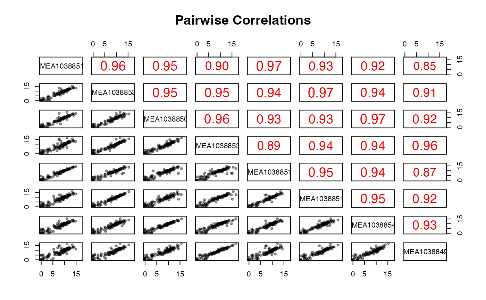

Pairwise scatter plot matrix and correlation plot of counts
Source:R/expression_summaries.R
pair_corr.RdPairwise scatter plot matrix and correlation plot of counts
Arguments
- df
A data frame, containing the (raw/normalized/transformed) counts
- log
Logical, whether to convert the input values to log2 (with addition of a pseudocount). Defaults to TRUE.
- method
Character string, one of
pearson(default),kendall, orspearmanas incor- use_subset
Logical value. If TRUE, only 1000 values per sample will be used to speed up the plotting operations.
Examples
library("macrophage")
library("DESeq2")
data(gse, package = "macrophage")
## dds object
dds_macrophage <- DESeqDataSet(gse, design = ~ line + condition)
#> using counts and average transcript lengths from tximeta
rownames(dds_macrophage) <- substr(rownames(dds_macrophage), 1, 15)
dds_macrophage <- estimateSizeFactors(dds_macrophage)
#> using 'avgTxLength' from assays(dds), correcting for library size
## Using just a subset for the example
pair_corr(counts(dds_macrophage, normalized = TRUE)[1:100, 1:8])
